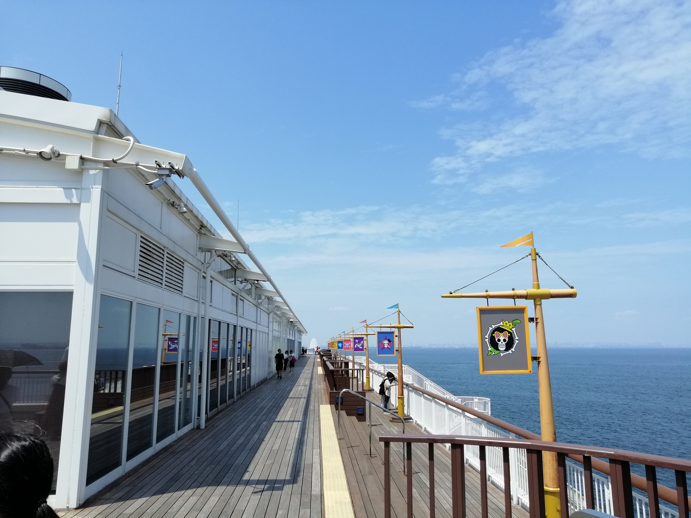
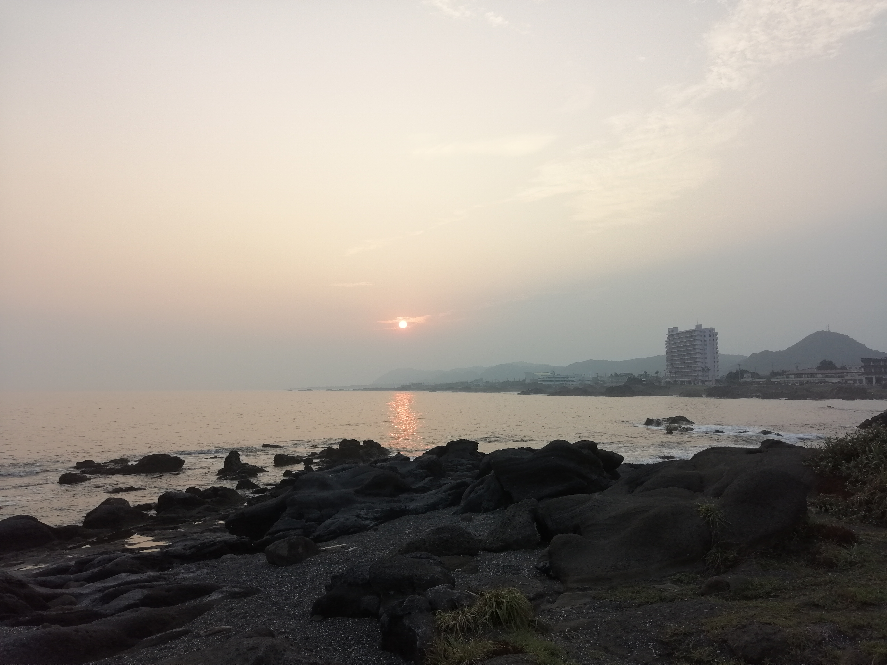
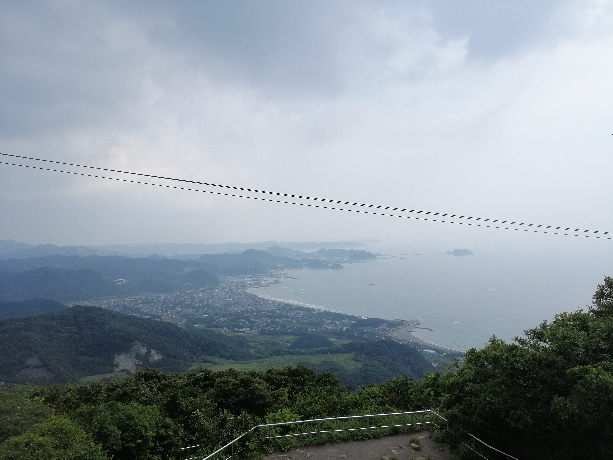
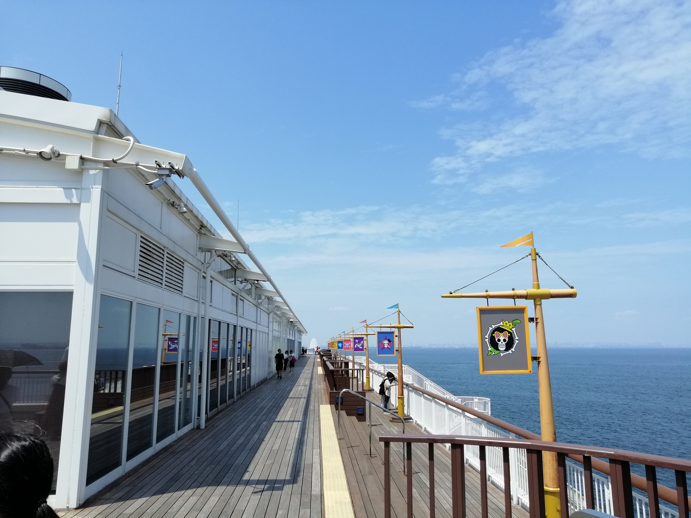
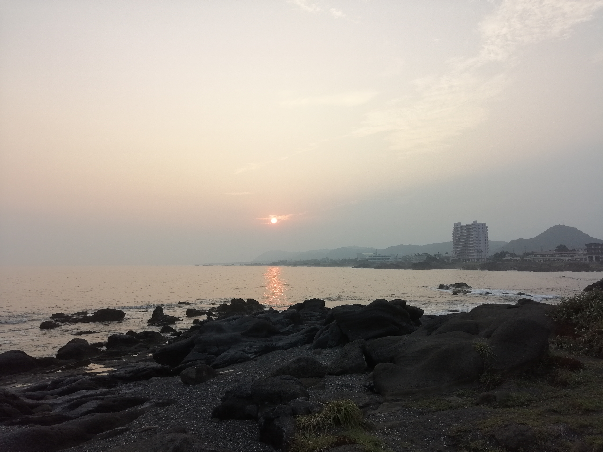
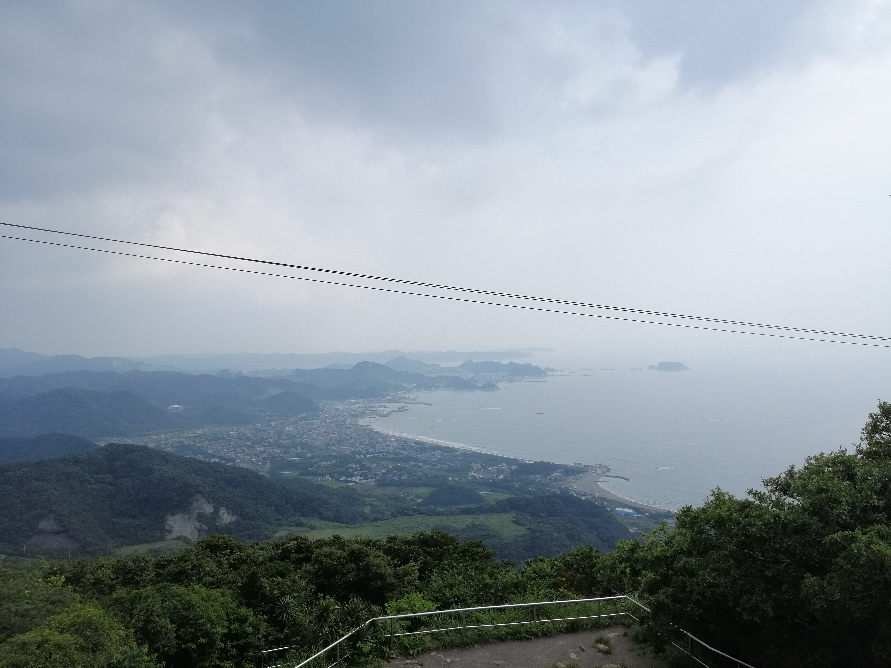

Kanto Gems
A collection of photos from the beautiful Kanto region of Japan.
Kanto Gems
A collection of photos from the beautiful Kanto region of Japan.
A popular spot with many activities including: volcanos, hot springs fields, and lakes. Here you can experience tradition, cuisine, and quintessential Japanese activities all in one.


A mountain in Ibaraki prefecture that offers stunning views of lake kasumigaura. In February you can enjoy the beautiful plum blossom festival that covers the mountain in pink.


The prefecture east of Tokyo. Full of wonderful beaches, temples, festivals, and people. Experience Japanese history and culture here.


 




